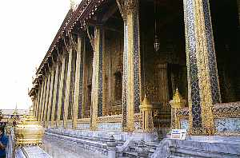
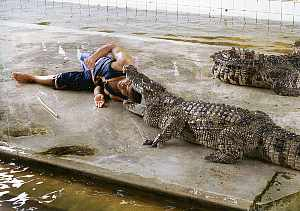
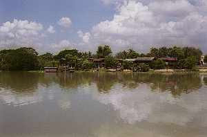
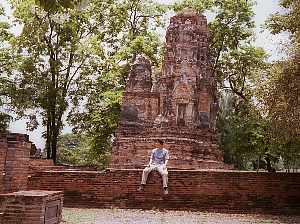

| このページは、2019年3月に保存されたアーカイブです。最新の内容ではない場合がありますのでご注意ください |
タイーバンコク | ２００２年４月 |
|  エメラルド寺院 | ４月２５日から２９日 友達２人と気ままなバンコク旅行 今回はかなりリッチな（自分的には）旅行となった。 まず、往復とも日本航空直行便！成田からバンコクまで約６時間半。ビール漬けになる。 バンコクには深夜到着。飛行機を降りるとむっとする暑さが迎えてくれる。 車でホテル「ロイヤル・メリディアン」へ。入ってすぐ高い天井と大理石の床にびびる。なんか、奥の方でジャズを演奏してるし。 夜も遅いので、部屋で休むこととする。連れ一人が一人部屋。私が友達と二人部屋。 |
部屋も広く、入ってすぐ応接セット。トイレ兼浴室も壁床が大理石で広くまぶしい。３１階なのでバンコクの夜景が綺麗だ。 が、ベッドルームに入るとびっくり。なんとダブルベットがおいてある。 え！・・・・・・（スウィートルーム？？） 友達と共に無言！間違いだと思い、フロントに文句言うも、言葉が良く通じない。深夜で言葉が分かるスタッフが居ない。タイ語は分からない。 （たとえ連れでも、野郎同士で寝たくない！） 結局、もう一人の連れの部屋がツインだったので（なぜ？）、そこと入れ替わり事なきを得る。 後で同じプランに参加した人に聞いたが、やはりスウィートルームで間違いないようだ。（そこは母娘） これ、野郎二人だけならどうなっていたか。 二日目、昼間バンコク市内の寺院、王宮とゾウさんショーを見る。ワニも芸をしている。（右写真） |  ワニの口の中に頭を入れる |
|  日本人街跡から見た景色 | ワニはホント思いっきり口を閉じると「カポッン」と軽快な音を立てる。 夜、これまたリッチに、違うホテルの中華料理を食べに行く。フカヒレが美味い。ホントにフカヒレ入っているよ！ そのまま「ムエタイ」会場まで歩く。途中、トゥクトゥク（オート三輪みたいなタクシー）に声をかけられるが、やばそうなので断る。（かなりしつこい） 「ムエタイ」はリングサイドで見るが、２，３階席では地元民が魚市場のように手を揚げ、合図しながら賭が行われている。（どうなっているか不明） 対戦は血が出ても平気で続行されて行く。あまり帰りが遅くなると危険なので（周りの外国人も）２２時３０分には会場を出る。（メインは終了） |
メータータクシーを無理矢理捕まえ、強引に乗り込みホテルへ向かえと言うが、運ちゃんは英語が話せず、英語のマップを見せても分からない様子。 我々が降りないため、仕方なく走り出すが、すごい勢いでホテルとは違う方向に走る。ヤバイ。マジにその時は思った。 運ちゃん携帯で誰かと話をし、その携帯を友達に渡す。それで場所を言えと言っているらしいが、電話の相手も英語は分からず失敗。 市内をいい加減ぐるぐる回ったとき、ホテルの近くを通ったので、そこで降りる。日本円で２１０円くらい。チップも含め３００円程度渡す。 いろいろ書きたいことはあるが、長くなりすぎるのでこの辺で終わりたい。 |  アユタヤ遺跡 |
| このページは、2019年3月に保存されたアーカイブです。最新の内容ではない場合がありますのでご注意ください |